Who Is Saturn, and What Does He Want?
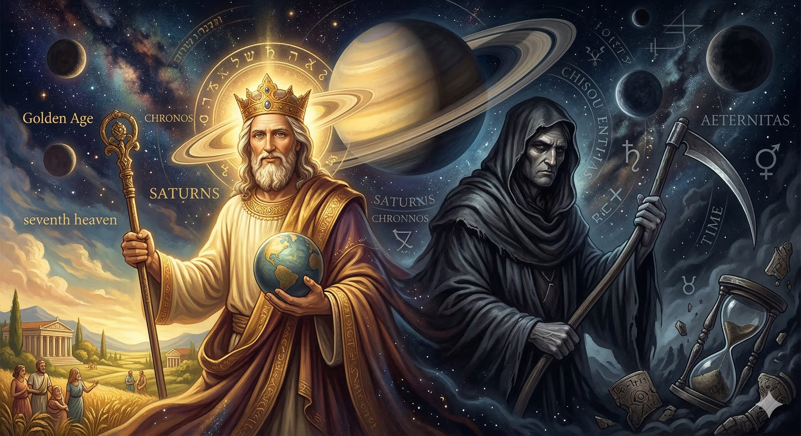
The ringed planet has been called the seventh heaven, king of the golden age, old mankind, devouring father, overthrower of heaven — and devil. His symbolism weaves through ancient mythology, Platonic philosophy, hermetic alchemy, medieval theology, and contemporary conspiracy theory alike.
On one level, Saturn is the topmost planetary sphere — the contemplative summit above the noise of ordinary experience. On another, he is the relentless devourer of his own children — time eating everything it creates. These two faces are not contradictions but stages: an archetype of both the primordial paradise we carry within us and the fall into material identification that hides it.
"There is a true Saturn — the primordial state — and there is the incorrect view of our being as mere body. Golden Age contra Saturnalia."
Conspiracy Theories
Saturn has recently become the principal deity of modern conspiracy imagination — and on a purely symbolic level, that reading is not without merit.
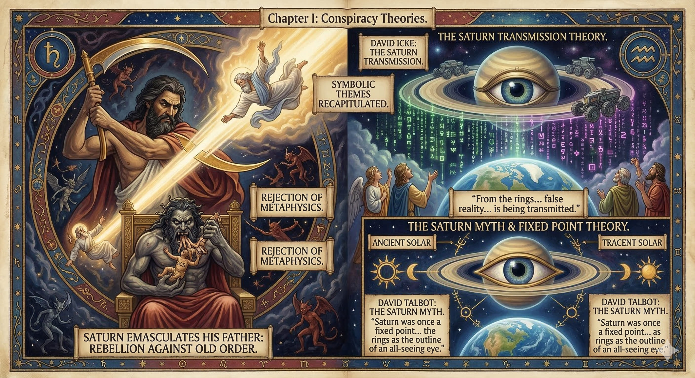
Saturn emasculates his father, the sky deity, rebelling against the old order. The violent overthrow of a reigning celestial father god occurs in several traditions. It does suggest something like a rebellion in heaven that succeeded — reality no longer depending on a stable transcendent order, but on power alone. It is a rejection of metaphysics.
Thinkers like David Icke propose that Saturn is essentially the Gnostic demiurge: from the rings of that planet our false reality — the matrix in which we live — is being transmitted. Those inside the simulation are like gods swallowed inside the belly of the devouring father.
Note: These theories are discussed here as symbolic recurrences of older themes, not as literal claims about planetary broadcasts or secret societies.
David Talbot's The Saturn Myth (1980) argues that Saturn was once clearly visible as a fixed point dominating the Earth's sky — its rings appearing as the outline of an all-seeing eye. Most solar symbolism, in this reading, traces back to Saturn. A cataclysmatic event then shifted Saturn to its current position. Norman Bergrund's Ringmakers of Saturn (1986) went further, suggesting the rings are artificial — maintained by giant vessels.
Symbolically, these modern sci-fi materialist readings recapitulate themes already prominent in antiquity, the Middle Ages, and early modernity — the tradition the rest of this exploration focuses on.
The Golden Age
At the root of the Western tradition, Saturn is not tyrant but king of paradise — and "paradise" may be an inner state as much as a mythic era.
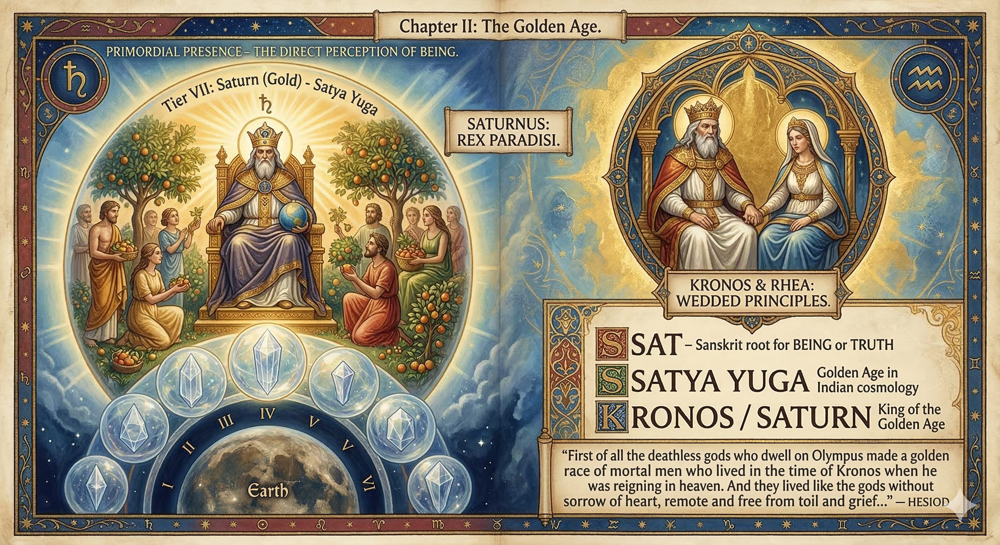
Plato's instinct was to reject the stories of Saturn as emasculator and consumer as "no pretty inventions" — providing early evidence for the split in the figure of Saturn between the dark poetic version and the philosophical ideal. For the Platonic tradition, Saturn is above all king of the golden age.
The Roman name Saturn may connect etymologically to the Sanskrit sat — meaning being or truth — which is the root of Satya Yuga, the golden age in Indian cosmology. Saturn would then mean "that which relates to sat," the primordial state in which persons had direct perception of their own being: felt immediacy of the present moment, the giftedness of existing, undistracted by the mind's constant activity.
"First of all the deathless gods who dwell on Olympus made a golden race of mortal men who lived in the time of Kronos when he was reigning in heaven. And they lived like the gods without sorrow of heart, remote and free from toil and grief…"
— Hesiod
Guénon writes that Saturn must not be considered primarily malevolent, "for it must not be forgotten that he is before all else the regent of the golden age." Neoplatonists like Proclus stress that Saturn and his wife Rhea are conjoined. If the gods are metaphysical principles, this unity represents the male principle — present awareness, the penetrative faculty of consciousness — wed to the female principle: the field of possibility, dynamism, experience. These are not yet divided as they will be when we lose the sense of being.
Sat
Sanskrit root for "being" or "truth." The primordial sense of presence before mental identification obscures it.
Satya Yuga
The Golden Age in Indian cosmology — the cycle of time in which consciousness is clearest and least fallen.
Kronos / Saturn
King of the Golden Age in Greek and Roman tradition; the highest planetary sphere; regent of the contemplative life.
The Seventh Heaven
In the medieval cosmos, Saturn crowns the planetary spheres — the abode of contemplatives and saints.
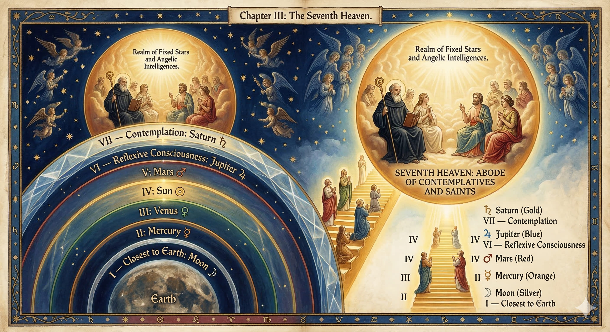
Saturn's status as king of the golden age corresponds to his position as the seventh planetary sphere — the highest heaven before the realm of fixed stars and angelic intelligences. He is the seventh heaven, the heavenly sphere of the contemplatives.
In the Divine Comedy, Dante places St. Benedict in Saturn's sphere. The state of people who lived in the golden age — in Greek and Indian tradition — is equivalent to the state of the saints who access the seventh heaven in Christian and Islamic mysticism. The number seven recurs across traditions bearing this weight: completeness, the summit reached after six stages of ascent.
Hyperborea
A paradisial realm beyond the north wind where the golden age never ended — and Apollo reigns.
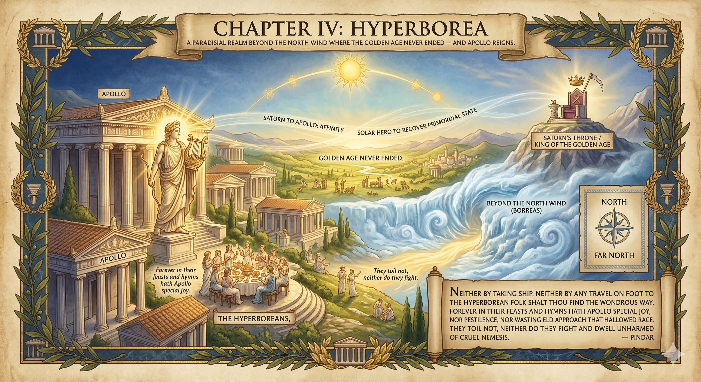
The Hyperborea — the "far north" — is a paradisial realm on Earth described in Hesiod's Catalogue of Women, Pindar's Pythian Odes, and Herodotus' Histories. It is depicted in terms strikingly similar to the golden age: a hidden paradise where that age never ended.
"Neither by taking ship, neither by any travel on foot to the Hyperborean folk shalt thou find the wondrous way. Forever in their feasts and hymns hath Apollo special joy, nor pestilence, nor wasting eld approach that hallowed race. They toil not, neither do they fight and dwell unharmed of cruel Nemesis."
— Pindar
The connection between the golden age and Hyperborea also connects Saturn to Apollo, who is the god of Hyperborea just as Saturn is king of the golden age. This affinity foreshadows the deeper identification — explored later — between Saturn and the solar hero who recovers the primordial state.
Santa Claus?
The jolly figure at the north pole carries ancient freight about primordial paradise and time's axis.
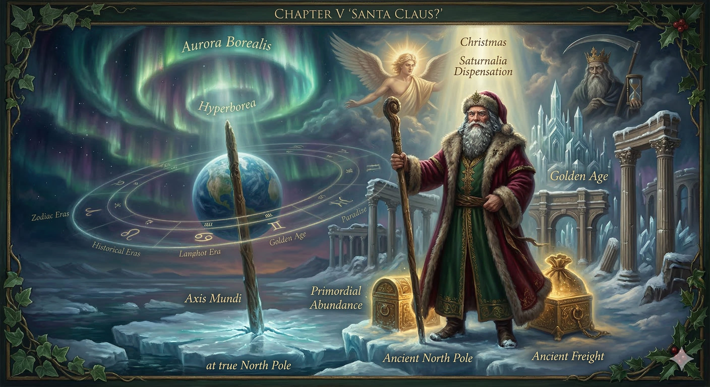
The modern figure of Santa Claus dwells at the north pole — the Hyperborea atop the earth's axis, the stable center around which the planet rotates. That pole is a place beyond the cycles of history. The earth's revolutions may be read as analogous to the cycles of history; the north pole becomes the prehistoric golden age, unfallen but present in the midst of history.
Christmas falls around Saturnalia, the Roman festival honoring Saturn held in mid-December — and near pre-Christian solar festivals, which again suggests an affinity between Saturn and Apollo. The gift-giver from beyond time, descending once a year to distribute bounty, echoes both the Saturnalian dispensation of abundance and the golden age's effortless plenty.
The north pole as locus of the timeless: a point beyond history where the golden age persists latently, breaking through in festivals when ordinary order is suspended and gifts are given freely.
Titans & Exile from Heaven
The myth of Saturn's war with the Titans and his eventual exile read, in a Platonic light, as an account of the inner fall from present awareness.
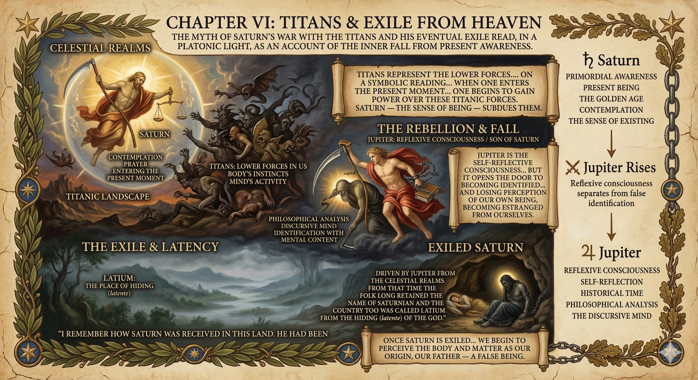
Saturn's war against the Titans is not merely cosmic politics. On a symbolic reading, the Titans represent the lower forces in us — the body's instincts, the mind's constant need for activity. When one enters the present moment through prayer or contemplation, one begins to gain power over these titanic forces. Saturn — the sense of being — subdues them.
But then Jupiter, his son, rebels and exiles him. Jupiter is the self-reflective consciousness — our ability to separate from our own being and reflect upon it. This is a wonderful faculty; it is what makes humans human. But it opens the door to becoming identified with the mind's contents and losing perception of our own being, becoming estranged from ourselves.
"I remember how Saturn was received in this land. He had been driven by Jupiter from the celestial realms. From that time the folk long retained the name of Saturnian and the country too was called Latium from the hiding (latente) of the god."
The primordial state becomes latent within us, dormant, hidden — dwelling in Latium, the land etymologically glossed as "the place of hiding." Once Saturn is exiled and the primordial sense of being recedes, we begin to perceive the body and matter as our origin, our father — a false being.
Saturn
Primordial awareness · Present being · The golden age · Contemplation · The sense of existing
Jupiter
Reflexive consciousness · Self-reflection · Historical time · Philosophical analysis · The discursive mind
The Mortal Body
In alchemical symbolism, Saturn is both the divine gold at the center and the lead that imprisons it — depending on which aspect has been activated.
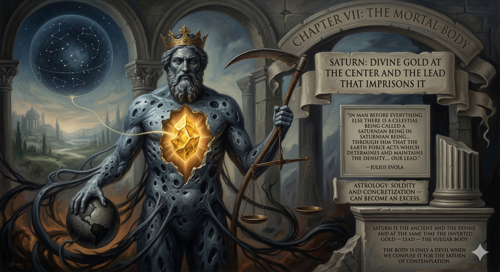
Julius Evola's reading of hermetic alchemy provides the clearest articulation of Saturn's duality in material terms:
"In man before everything else there is a celestial being also called a Saturnian being or simply Saturn. It's through him that the earth force acts which determines and maintains the density or heaviness, our lead. In alchemical terms, this is the hard and tangible animal body. This entity is seen as the power of devouring and yearning, the root of all thirst and desire. Even though it's the eternal matrix of individual bodies, at the same time, since they are so ephemeral, it appears as the god who after having created them devours them."
— Julius Evola, on hermetic alchemy
Saturn as hard, tangible body corresponds to astrology's understanding of this planet as bringing solidity and concretization — which can be positive or become an excess. Evola summarizes the duality:
"Thus in alchemy we encounter a duplication: Saturn is the ancient and the divine, and at the same time the inverted gold — lead — the vulgar body."
— Julius Evola
Once we lose perception of the former we come to feel the latter is our only origin. The body is only a devil when we confuse it for the Saturn of contemplation. When the body's instincts are no longer aligned with anything higher — because we don't perceive anything higher — they feel supreme.
Saturnalia
The Roman festival of inversion dramatizes the loss of the true Saturn and the reign of the false.
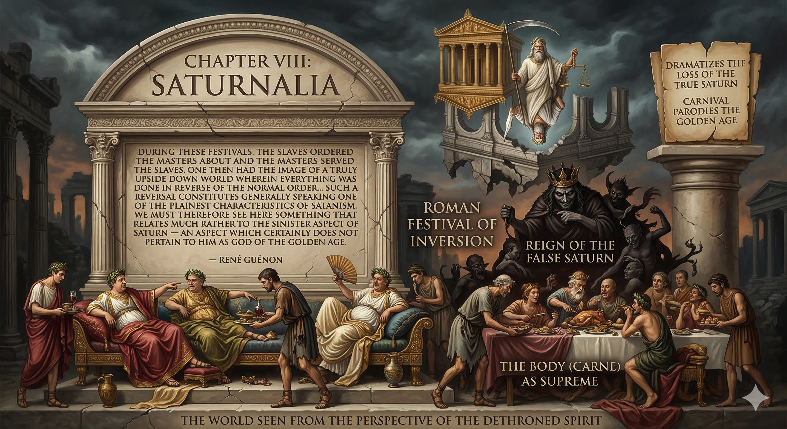
Saturnalia was a Roman carnival in which slaves ordered masters about — a ritual of inversion. It illustrates the idea that the true Saturn has been lost: metaphysics has been inverted, and we end up with carne — the body — as supreme. Carnival itself derives from the Latin for "meat" (carne), pointing to the reign of bodily instinct when the higher faculty is eclipsed.
"During these festivals, the slaves ordered the masters about and the masters served the slaves. One then had the image of a truly upside down world wherein everything was done in reverse of the normal order… such a reversal constitutes generally speaking one of the plainest characteristics of Satanism. We must therefore see here something that relates much rather to the sinister aspect of Saturn — an aspect which certainly does not pertain to him as god of the golden age."
— René Guénon
Saturnalia does not celebrate the golden age — it parodies it. The historical claim that such festivals commemorate that paradise is, for Guénon, clearly false. The reversal of hierarchy is not a golden age but its negation — its photographic negative, the world seen from the perspective of the dethroned spirit.
Satan & the Serpent
How the inverted Saturn — matter made supreme — became identified with the Christian devil.
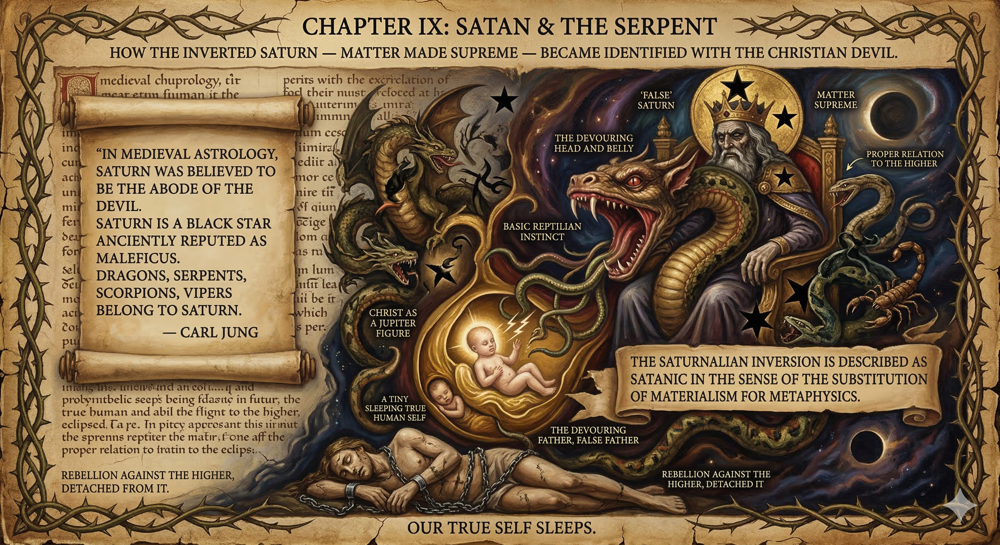
The Saturnalian inversion is described as satanic in the sense of the substitution of materialism for metaphysics — the body's titanic instincts as a devouring head and belly, the serpent: basic reptilian instinct. This is not evil in itself if it is in proper relation to the higher. It becomes demonic when in rebellion against the higher, detached from it.
For this reason, serpents became a symbol for Saturn, and in medieval astrology he was identified with the devil:
"In medieval astrology, Saturn was believed to be the abode of the devil. Saturn is a black star anciently reputed as Maleficus. Dragons, serpents, scorpions, vipers belong to Saturn."
— Carl Jung
The assimilation of Satan and false Saturn also occurs in John's Apocalypse, where the dragon means to consume the child as it is born — Christ as a Jupiter figure, the devil repeating the Saturn myth as devouring father, false father. Our true self sleeps, and we are assailed by the serpent.
Abraham & the Grail King
The wounded father waiting to be rescued — from sacred scripture to Arthurian romance to pop culture.
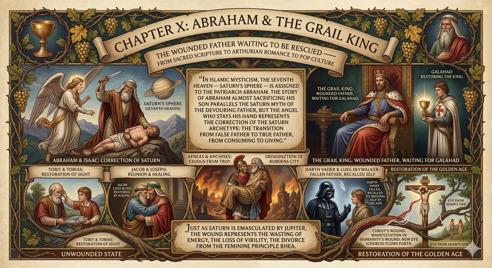
In Islamic mysticism, the seventh heaven — Saturn's sphere — is assigned to the patriarch Abraham. The story of Abraham almost sacrificing his son parallels the Saturn myth of the devouring father, but the angel who stays his hand represents the correction of the Saturn archetype: the transition from false father to true father, from consuming to giving.
The archetype of the injured king appears across traditions:
- The Grail King — wounded on his side or loins, waiting for his descendant Galahad to restore him. Just as Saturn is emasculated by Jupiter, the wound represents the wasting of energy, the loss of virility, the divorce from the feminine principle Rhea.
- Tobit — Father weakened and blind, restored by his son Tobias in the biblical Book of Tobit.
- Jacob & Joseph — Jacob goes blind in the Quran, restored by reunion with Joseph.
- Aeneas & Anchises — Aeneas carries his injured father out of the burning city of Troy.
- Darth Vader & Luke Skywalker — The fallen father, recalled to his original self by his son.
In biblical terms: Eve came from Adam's side. But now the emergence of the feminine from the masculine is experienced as a wound — the present moment alienated from our perception, male and female divorced. Christ's wound on the cross manifests this wound of humanity; from the blood and water flows the new Eve, the Church. The true father must be raised up, the golden age restored.
The Spiritual Hero
Casting out the false Saturn and recovering the true — the alchemical work of Jupiter rising from the black belly.
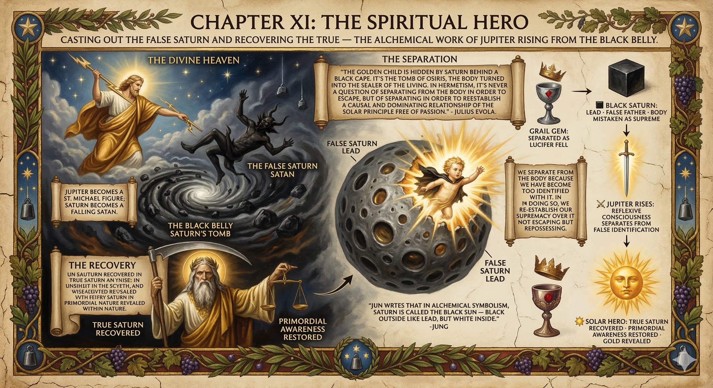
"The golden child is hidden by Saturn behind a black cape. It's the tomb of Osiris, the body turned into the sealer of the living. In Hermetism, it's never a question of separating from the body in order to escape, but of separating in order to reestablish a causal and dominating relationship of the solar principle free of passion."
— Julius Evola
We separate from the body because we have become too identified with it. In doing so, we re-establish our supremacy over it — not escaping but repossessing. At this point the myth of Jupiter exiling Saturn acquires a new meaning: the separation from the body perceived as devouring is represented by Jupiter casting the false Saturn, the devouring Saturn, out of heaven. Jupiter becomes a St. Michael figure; Saturn becomes a falling Satan.
But it is not enough to cast out the false. You have to regain the original. This is why in the Grail stories you gain the Grail — originally a gem on the crown of Lucifer, separated as he fell, a piece of heaven to be recovered. Cast out the false Saturn; regain the true Saturn.
Jung writes that in alchemical symbolism, Saturn is called the black sun — black outside like lead, but white inside. The golden child hidden within the black cape is the Jupiter who breaks out of the false Saturn's imprisoning womb, overcoming the apparent primacy of the body over consciousness.
The Black Cube
Six faces, a seventh center — the cube as completion of space, and its counterfeit in modern techno-materialist imagery.
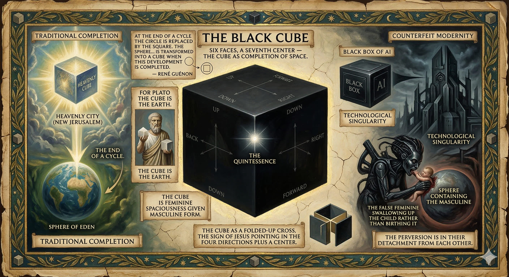
The cube has six faces representing the six spatial coordinates: up, down, forward, back, right, left. The six points of space plus the seventh center — the quintessence. You can think of the cube as a folded-up cross, the sign of Jesus pointing in the four directions plus a center. The Latin quintessentia — the fifth essence — is that center within physical space.
For Plato the cube is the earth — the earthly equivalent of the heavenly sphere. If the cube is isolated from the sky, it represents the earth as prison, cut off from what is above it. Guénon writes:
"At the end of a cycle the circle is replaced by the square. The sphere, which represents the development of possibilities by the expansion of the primordial point, is transformed into a cube when this development is completed."
— René Guénon
In the beginning: sphere. At the end: cube — the final symmetry of creation. The traditional theme of history ending with the heavenly cube (and the sphere of Eden giving way to the heavenly city of the New Jerusalem) is parodied by the black box of AI as a technos singularity — the dystopian anti-human bad ending, the false feminine swallowing up the child rather than birthing it. The sphere contains the masculine. The cube is feminine spaciousness given masculine form. Both are necessary; the perversion is in their detachment from each other.
Chronos & Apollo
The split of Kronos into dark Kronos and bright Carneos — and the solar hero who discovers the true primordial king.
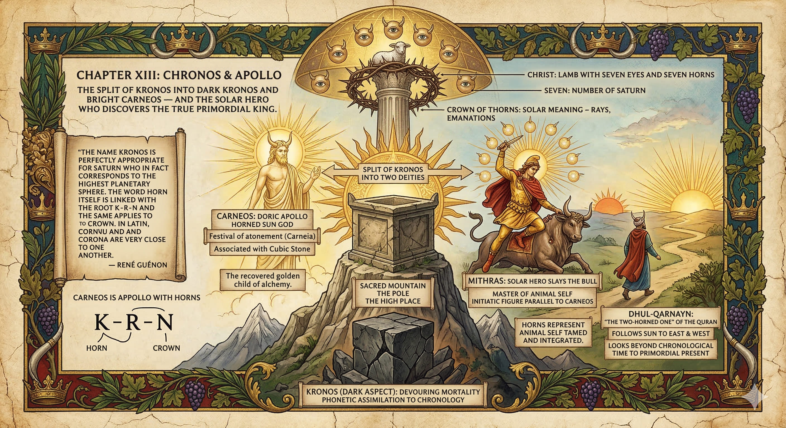
Guénon argues that Kronos was never primarily a god of time (chronology), but a heavenly deity whose name was later phonetically assimilated to khronos, time. Even if we took him as a god of time, it would be time not as devouring mortality but as the eternal moment — the golden age before history, contemplation above the other spheres.
Guénon identifies a split of the original name Kronos into two Greek deities: the malevolent aspect concentrating on Kronos, while the beneficent aspect remained attached to Carneos — a Doric form of Apollo. Carneos is the god of the high place, the sacred mountain, the pole — associated with the cubic stone. He is a horned sun god, Apollo with horns:
"The name Kronos is perfectly appropriate for Saturn who in fact corresponds to the highest planetary sphere. The word horn itself is linked with the root K‑R‑N and the same applies to crown. In Latin, cornu and corona are very close to one another."
— René Guénon
Crown and horn: the high place, the summit, rays emanating from the sun or a weapon. The crown of thorns on Jesus carries a solar meaning — rays, emanations. Horns represent the animal self tamed and integrated; one wears horns as a king because one has subdued the animal self. In the Apocalypse, Christ appears as the Lamb with seven eyes and seven horns — seven, the number of Saturn.
Carneos
Doric Apollo · Horned sun god · Festival of atonement (Carneia) · The high place · The recovered golden child of alchemy
Mithras
Solar hero who slays the bull · Master of the animal self · Initiatic figure parallel to Carneos
Dhul-Qarnayn
"The Two-Horned One" of the Quran · Follows the sun to east and west · Looks beyond chronological time to the primordial present
Conclusion: The Golden Age Restored
Apollo, the clarified mind, the Apollonian personality — a new heaven and earth that dawn upon everything history has earned.
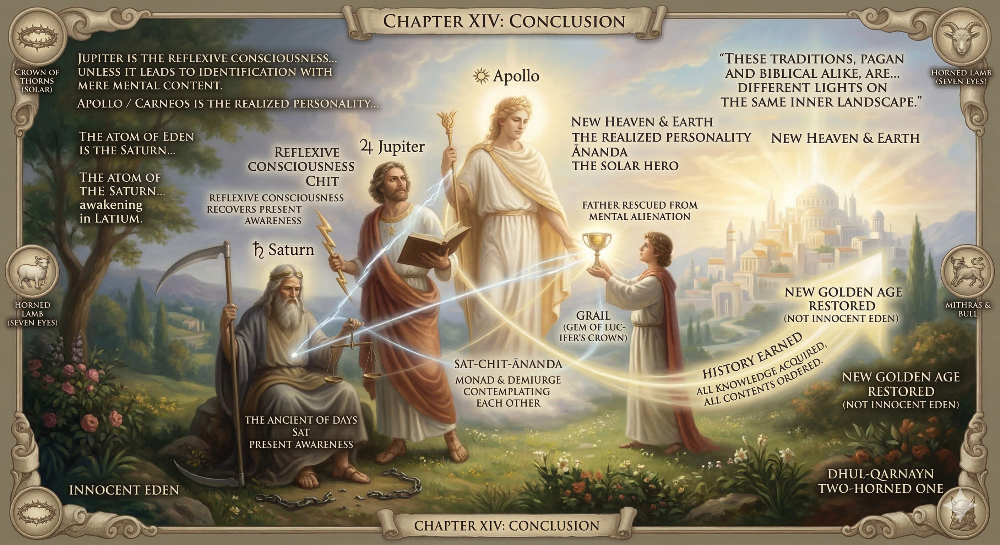
Jupiter is the reflexive consciousness — our ability to unfold from our own being and examine it — wonderful unless it leads to identification with mere mental content. Apollo / Carneos is the realized personality: once reflexive consciousness recovers present awareness, rescues the father rather than being alienated by mental activity from its own being, the mind clarifies. The personality becomes luminous — Apollonian.
The golden age is restored, but not as innocent Eden. It dawns on everything we have gained through history — all knowledge acquired, all contents of the mind ordered. New heaven and new earth. The idea is to inhabit the clarified mind while exercising the reflective faculty while remaining aware of the contemplative core.
"The atom of Eden is the Saturn of the golden age. The Adam that emerges from Hades is like Saturn awakening in Latium."
In Neoplatonism: Saturn–Rhea is the monad, the unity of the One as it first manifests. Jupiter is the demiurge who, contemplating the monad, produces the cosmos. In Indian terms: sat (being, contemplative consciousness), chit (reflexive consciousness), ānanda (bliss, experiential consciousness). In Daniel's vision: Saturn proper is the Ancient of Days; the dynamic aspect is the Son of Man.
These traditions, pagan and biblical alike, are not contradictions but different lights on the same inner landscape. The human mind is always yearning for the good, the true, and the beautiful. Even in perverse or broken form, the stories that surface from the human soul can be turned over; the truth within them can be found, refined, and — perhaps — baptized into service of a righteous culture yet to come.
Saturn
The Ancient of Days · Sat · Monad · Present awareness · True father
Jupiter
The Demiurge · Chit · Reflexive consciousness · Son of Man
Apollo
The Solar Hero · Ānanda · Realized personality · New heaven & earth